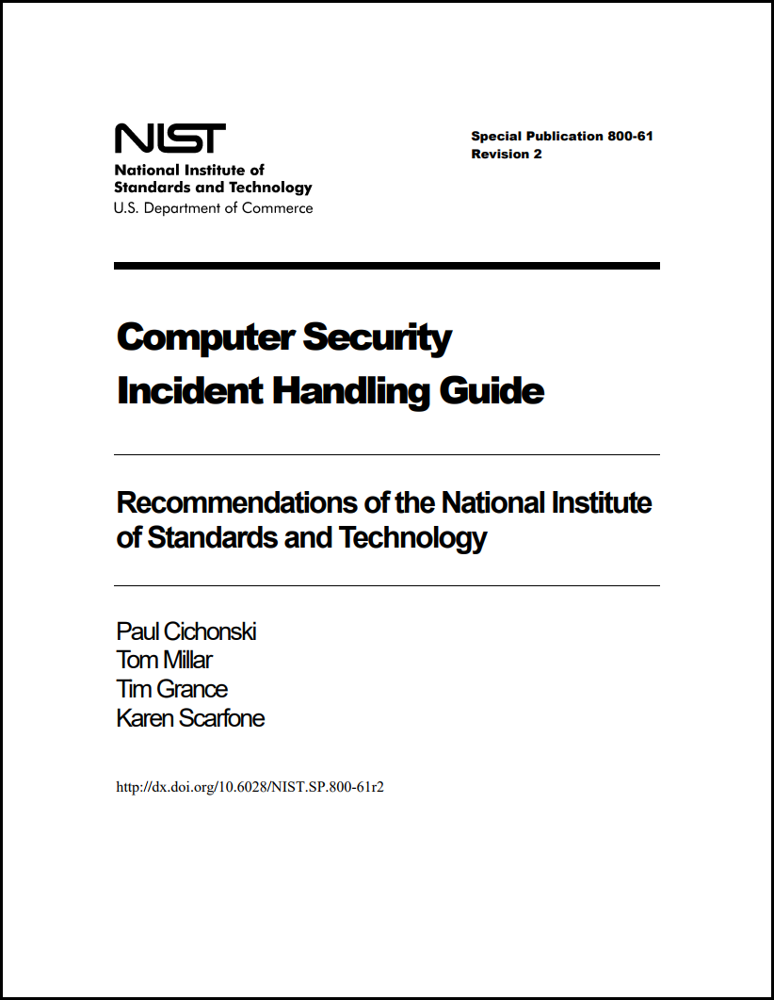
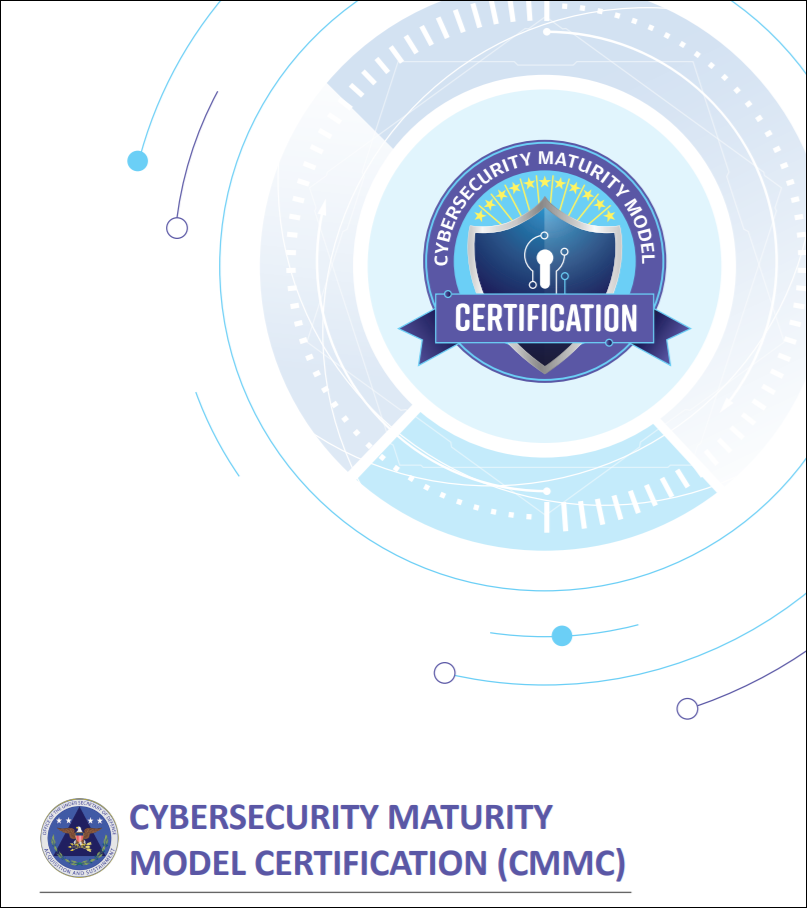

28.4.1 Cómo establecer una capacidad de respuesta ante los incidentes
La respuesta a incidentes implica los métodos, políticas y procedimientos que utiliza una organización para responder a un ataque cibernético. Los objetivos de la respuesta ante incidentes son limitar el impacto del ataque, evaluar los daños causados e implementar procedimientos de recuperación. Debido a la posible pérdida a gran escala de bienes e ingresos que pueden causar los ciberataques, es esencial que las organizaciones creen y mantengan planes detallados de respuesta a incidentes y designen al personal responsable de ejecutar todos los aspectos de ese plan.
Las recomendaciones del NIST (U.S. National Institute of Standards and Technology ) para la respuesta ante los incidentes se detallan en su Publicación especial 800-61 (Revisión 2) titulada “Guía de manejo de incidentes de seguridad informática” que se muestra en la figura.
Nota: Aunque este capítulo resuma gran parte del contenido en el estándar NIST 800-61r2, debería familiarizarse con la publicación entera para cubir todos los temas del examen Entendiendo Operaciones Fundamentales de Cisco Ciberseguridad ( Understanding Cisco Cybersecurity Operations Fundamentals).

El estándar 61r2 800 del NIST proporciona pautas para el manejo de incidentes, especialmente para analizar datos relacionados con el incidente y determinar la respuesta adecuada para cada incidente. Es posible respetar las pautas independientemente de las plataformas de hardware, los sistemas operativos, los protocolos o las aplicaciones que se utilicen.
El primer paso para una organización es establecer una capacidad de respuesta ante los incidentes de seguridad informática (CSIRC, computer security incident response capability). NIST recomienda crear políticas, planes y procedimientos para establecer y mantener un CSIRC.
Elementos de la política
Una política de respuesta ante los incidentes detalla cómo deben manejarse los incidentes de acuerdo con la misión, el tamaño y la función de la organización. La política debe revisarse periódicamente a fin de modificarla para que cumpla con los objetivos de la hoja de ruta que se haya trazado. Entre los elementos de política figuran los siguientes:
Elementos del plan
Un buen plan de respuesta ante los incidentes ayuda a minimizar el daño causado por un incidente. También ayuda a mejorar el programa de respuesta ante los incidentes en general, ajustándolo según las lecciones aprendidas. El plan debe garantizar que cada parte implicada en la respuesta ante un incidente comprenda claramente lo qué hará y lo qué harán los demás. Los elementos del plan son los siguientes:
Elementos del procedimiento
Los procedimientos que se siguen durante una respuesta ante un incidente deben respetar el plan de respuesta ante los incidentes. Los elementos de procedimientos son los siguientes:
Estos son los procesos comunes operativos estándar (SOP) Estos SOP deben ser detallados para tener en mente la misión y los objetivos de la organización cuando se los sigue. Los SOP minimizan los errores que podría causar el personal cuando está bajo presión mientras participa en el manejo de incidentes. Es importante compartir y poner en práctica estos procedimientos, asegurándose de que sean útiles, precisos y adecuados.
28.4.2 Verifique su conocimiento - Identificar los elementos del plan de respuesta ante los incidentes
28.4.3 Partes interesadas de la respuesta ante los incidentes
Otros grupos e individuos dentro de la organización también pueden estar involucrados en el manejo de incidentes. Es importante asegurarse de que cooperen antes de que ocurra un incidente. Sus conocimientos y habilidades pueden ayudar al CSIRT (Computer Security Incident Response Team) (Equipo de respuesta a incidentes de seguridad informática) a manejar el incidente rápida y correctamente. Estas son algunas de las partes interesadas que pueden estar involucradas en el manejo de un incidente de seguridad:
La certificación del modelo de madurez de ciberseguridad
El marco de certificación del modelo de madurez de ciberseguridad (CMMC) fue creado para evaluar la capacidad de las organizaciones que desempeñan funciones para el Departamento de Defensa de los Estados Unidos (DoD) para proteger la cadena de suministro militar de interrupciones o pérdidas debidas a incidentes de ciberseguridad. Las violaciones de seguridad relacionadas con la información del Departamento de Defensa indicaron que las normas NIST no eran suficientes para mitigar el panorama de amenazas cada vez mayor y en evolución, especialmente de los agentes de trato nacional. Para que las empresas reciban contratos del DoD, dichas empresas deben estar certificadas. La certificación consta de cinco niveles, con diferentes niveles requeridos dependiendo del grado de seguridad requerido por el proyecto.
El CMMC especifica 17 dominios, cada uno de los cuales tiene un número variable de capacidades asociadas a él. La organización se califica por el nivel de madurez que se ha alcanzado para cada uno de los dominios. Uno de los dominios se refiere a la respuesta a incidentes. Las capacidades asociadas con el dominio de respuesta a incidentes son las siguientes:
La CMMC certifica las organizaciones por nivel. Para la mayoría de los dominios, hay cinco niveles, sin embargo, para la respuesta a incidentes, sólo hay cuatro. Cuanto mayor sea el nivel certificado, más madura será la capacidad de ciberseguridad de la organización. A continuación se muestra un resumen de los niveles de madurez del dominio de respuesta a la incidencia.
Nivel 2: - establezca un plan de respuesta a incidentes que siga el proceso NIST. Detecte, informe y priorice eventos. Responder a los eventos siguiendo procedimientos predefinidos. Analizar la causa de los incidentes para mitigar problemas futuros.
Nivel 3: - Documentar e informar a las partes interesadas que hayan sido identificadas en el plan de respuesta a incidentes. Pruebe la capacidad de respuesta a incidentes de la organización.
Nivel 4: - utilice el conocimiento de las tácticas, técnicas y procedimientos del atacante (TPT) para refinar la planificación y ejecución de la respuesta a incidentes. Establezca un centro de operaciones de seguridad (SOC) que facilite una capacidad de respuesta 24/7.
Nivel 5: - Utilizar técnicas informatizadas aceptadas y sistemáticas de recopilación de datos forenses, incluido el manejo y almacenamiento seguros de datos forenses. Desarrollar y utilizar respuestas manuales y automatizadas en tiempo real a posibles incidentes que sigan patrones conocidos.

28.4.4 Ciclo útil de la respuesta ante los incidentes de NIST
NIST define cuatro pasos en el ciclo de vida del proceso de respuesta ante los incidentes, como se ve en la figura.
Preparación - Los miembros del CSIRT reciben capacitación sobre cómo responder ante un incidente. Los miembros del CSIRT deben desarrollar continuamente el conocimiento de las amenazas emergentes.
Detección y análisis - Mediante el monitoreo continuo, el CSIRT identifica, analiza y valida rápidamente un incidente.
Contención, erradicación y recuperación - El CSIRT implementa procedimientos para contener la amenaza, erradicar el impacto en los activos de la organización y utilizar copias de respaldo para restaurar datos y software. Es posible que, durante esta fase, se regrese a la detección y el análisis para obtener más información o para ampliar el alcance de la investigación.
Actividades posteriores al incidente - Luego, el CSIRT documenta cómo se manejó el incidente, recomienda cambios para respuestas futuras y especifica cómo evitar que vuelva a suceder.
El ciclo de vida de respuesta ante los incidentes pretende ser un proceso de aprendizaje reafirmante en el que cada incidente alimente el proceso para el manejo de futuros incidentes. Cada una de estas fases se analiza más detalladamente en este tema.
Ciclo de vida de la respuesta ante incidentes

28.4.5 Preparación
La fase de preparación tiene lugar cuando se crea el CSIRT y se lo capacita. Esta fase ocurre cuando se adquieren e implementan las herramientas y los activos que serán necesarios para que el equipo investigue los incidentes. La siguiente lista tiene ejemplos de acciones que también tienen lugar durante la fase de preparación:
Es posible que hagan falta recursos de análisis de incidentes adicionales. Ejemplos de estos recursos son una lista de activos críticos, diagramas de red, listas de puertos, hash de archivos esenciales y lecturas de los valores de referencia de la actividad de la red y el sistema. El software de mitigación también es un elemento importante al prepararse para manejar un incidente de seguridad. Es posible que se necesite una imagen de un sistema operativo limpio y archivos de instalación de aplicaciones para recuperar una computadora de un incidente.
A menudo, el CSIRT suele tener preparado un kit de emergencia. Se trata de una caja portátil con muchos de los elementos mencionados antes para ayudar a establecer una respuesta rápida. Algunos de estos elementos pueden ser una computadora portátil con el software apropiado instalado, medios de respaldo, y cualquier otro hardware, software o información para ayudar en la investigación. Es importante inspeccionar el kit de emergencia periódicamente para instalar actualizaciones y asegurarse de que todos los elementos necesarios están disponibles y listos para usar. También resulta útil implementar el kit de emergencia con el CSIRT para asegurarse de que los miembros del equipo sepan cómo utilizar correctamente el contenido.
Fase de preparación

28.4.6 Detección y análisis
Fase de detección y análisis
Dado que hay muchas maneras diferentes en las que puede ocurrir un incidente de seguridad, es imposible crear instrucciones que abarquen completamente cada paso para manejarlos. Los distintos tipos de incidentes requieren respuestas diferentes.
Vectores de ataque
Una organización debe estar preparada para manejar cualquier incidente, pero debe centrarse en los tipos más comunes de incidentes para poder resolverlos con rapidez. Estos son algunos de los tipos de vectores de ataque más comunes:
Algunos incidentes son fáciles de detectar, mientras que otros pueden pasar inadvertidos durante meses. Es posible que la detección de incidentes de seguridad sea la fase más difícil en el proceso de respuesta ante los incidentes. Los incidentes se detectan con muchos métodos diferentes y no todos son muy detallados ni claros. Hay métodos automatizados de detección, como el software antivirus o un IDS. También hay métodos manuales mediante informes de usuario.
Es importante determinar con precisión el tipo de incidente y la magnitud de sus efectos. Las señales que indican un incidente se clasifican en dos categorías:
Análisis
El análisis de incidentes es difícil porque no todos los indicadores son exactos. En un mundo perfecto, cada indicador debería analizarse para saber si es exacto. Esto es casi imposible debido a la cantidad y variedad de incidentes registrados e informados. El uso de algoritmos complejos y aprendizaje mecanizado ayuda, en ocasiones, a determinar la validez de los incidentes de seguridad. Esto es más frecuente en organizaciones grandes que sufren miles o incluso millones de incidentes a diario. Un método que puede utilizarse es la creación de perfiles de la red y el sistema. La creación de perfiles consiste en medir las características de la actividad prevista en dispositivos y sistemas de redes para que los cambios se puedan identificar más fácilmente
Cuando un indicador de cambio es exacto, no significa necesariamente que se haya producido un incidente de seguridad. Algunos indicadores tienen lugar por otros motivos además de la seguridad. Por ejemplo, un servidor que deja de funcionar continuamente puede tener una memoria RAM deficiente en lugar de estar sufriendo un ataque de desbordamiento del búfer. Para estar seguros, incluso los síntomas ambiguos o contradictorios deben analizarse para determinar si ha ocurrido un incidente de seguridad real. El CSIRT debe reaccionar rápidamente para validar y analizar los incidentes. Esto se realiza siguiendo un proceso predefinido y documentando cada paso
Definición del alcance
Cuando el CSIRT cree que se ha producido un incidente, debe realizar inmediatamente un análisis inicial para determinar el alcance de los hechos, por ejemplo, qué redes, sistemas o aplicaciones se vieron afectados, qué o quién originó el incidente y cómo está ocurriendo. Esta actividad de determinación del alcance debe proporcionar información suficiente para que el equipo priorice las actividades posteriores, como la contención del incidente y un análisis más profundo de los efectos del incidente.
Notificación de incidentes
Cuando se analiza y prioriza un incidente, el equipo de respuesta ante los incidentes debe notificar a las personas interesadas y partes externas para que todos los que necesitan involucrarse desempeñen sus funciones. Algunos ejemplos de las personas a las que debe notificarse normalmente son los siguientes:
28.4.7 Contención, erradicación y recuperación
Fase de contención, erradicación y recuperación

Después de detectar un incidente de seguridad y realizar análisis suficientes para determinar que es válido, se debe contener a fin de decidir qué hacer al respecto. Es necesario definir estrategias y procedimientos para la contención de incidentes antes de que un incidente ocurra e implementarlas antes de que el daño se propague.
Estrategia de contención
Para cada tipo de incidente, se debe crear e imponer una estrategia de contención. Estas son algunas condiciones para determinar el tipo de estrategia que se debe crear para cada tipo de incidente:
Durante la contención, se pueden producir más daños. Por ejemplo, no siempre es recomendable desconectar el host atacado de la red. El proceso malicioso podría avisar de esta desconexión al controlador de CnC y desencadenar un borrado de datos o la encriptación del objetivo. Aquí es donde la experiencia y los conocimientos pueden ayudar a contener un incidente que no se contemple en el alcance de la estrategia de contención.
Evidencia
Durante un incidente, debe recopilarse evidencia para resolverlo. La evidencia también es importante para la posterior investigación por parte de las autoridades. Es fundamental disponer de documentación clara y concisa relativa a la preservación de la evidencia. Para que la evidencia sea admisible en un tribunal, su recopilación debe ajustarse a reglas específicas. Después de recopilar la evidencia, se debe explicar correctamente. A esto se lo conoce como “cadena de custodia”. Estos son algunos de los elementos más importantes que deben registrarse cuando se documenta evidencia utilizada en la cadena de custodia:
Es fundamental capacitar a cualquier persona involucrada en el manejo de evidencia sobre cómo protegerla adecuadamente.
Identificación del atacante
La identificación de los atacantes no es tan importante como contener y erradicar el ataque, y recuperar los hosts y servicios. Sin embargo, identificar a los atacantes minimizará el impacto en los activos y servicios esenciales de la empresa. Estas son algunas de las acciones más importantes que pueden realizarse para intentar identificar un host atacante durante un incidente de seguridad:
Erradicación, recuperación y corrección
Después de la contención, el primer paso para la erradicación consiste en identificar todos los hosts que necesitan correcciones. Se deben eliminar todos los efectos del incidente de seguridad. Esto incluye las infecciones de malware y las cuentas de usuario atacadas. También se deben aplicar correcciones o parches en todas las vulnerabilidades que el atacante aprovechó, de modo que el incidente no se repita.
Para recuperar los hosts, deben usarse copias de respaldo limpias y recientes, o se deben reconstruir los hosts con medios de instalación si no hay copias de seguridad disponibles o también se vieron afectadas. También, deben implementarse completamente actualizaciones y parches en los sistemas operativos y el software instalado en todos los hosts. Deben modificarse todas las contraseñas de hosts y contraseñas de sistemas esenciales según la política de seguridad de las contraseñas. Este puede ser un buen momento para validar y actualizar la seguridad de la red, las estrategias de respaldo y las políticas de seguridad. Los atacantes suelen repetir los ataques en los sistemas o utilizan un ataque similar dirigido a recursos adicionales; por lo tanto, es necesario prevenir esto lo mejor posible. Hace falta concentrarse en lo que pueda repararse rápidamente y dar prioridad a las operaciones y los sistemas esenciales.
28.4.8 Actividades posteriores al incidente
Fase de actividad posincidente
Después de que las actividades de respuesta ante los incidentes erradican las amenazas y la organización comienza a recuperarse de los efectos del ataque, es importante mirar hacia atrás y reunirse periódicamente con todas las personas involucradas para analizar los acontecimientos que tuvieron lugar y las acciones de todos los individuos durante el manejo del incidente. Esto proporcionará una plataforma para aprender qué se hizo bien, qué se hizo mal, qué se podría cambiar y qué se debe mejorar.
Cómo aprovechar las lecciones para fortalecerse
Después de manejar un incidente importante, la organización debe llevar a cabo una reunión de “lección aprendida” para examinar la eficacia del proceso de manejo de incidentes e identificar el fortalecimiento que hace falta en los controles y las prácticas vigentes de seguridad. Algunas buenas preguntas para formularse durante la reunión son las siguientes:
28.4.9 Recopilación de datos y retención de incidentes
Gracias a las reuniones de “lecciones aprendidas”, los datos recopilados pueden utilizarse para determinar el costo de un incidente por razones presupuestarias, así como determinar la eficacia del CSIRT e identificar las posibles debilidades de seguridad en todo el sistema. Los datos recopilados deben ser procesables. Solo deben recopilarse datos que puedan utilizarse para definir y refinar el proceso de manejo de incidentes.
Una mayor cantidad de incidentes manejados puede demostrar que algo en la metodología de respuesta ante los incidentes no está funcionando correctamente y debería mejorarse. También podría demostrar incompetencia de parte del CSIRT. Una menor cantidad de incidentes puede demostrar que la seguridad de red y hosts ha mejorado. También podría demostrar una falta de detección de incidentes. Los recuentos individuales de cada tipo de incidente pueden resultar efectivos para mostrar las fortalezas y debilidades del CSIRT y de las medidas de seguridad implementadas. Estas subcategorías pueden ayudar a definir dónde residen las debilidades, en lugar de indicar solamente que existen.
El tiempo de cada incidente proporciona información sobre la cantidad total de mano de obra utilizada y el tiempo total que tomó cada fase del proceso de respuesta ante los incidentes. El tiempo que demoró la primera respuesta también es importante, así como cuánto tardó la notificación del incidente y su derivación fuera de la organización si fuera necesario.
Es importante realizar una evaluación objetiva de cada incidente. La respuesta ante un incidente resuelto puede analizarse para determinar su eficacia. La publicación especial 800-61 de NIST proporciona los siguientes ejemplos de actividades que se realizan duarante la evaluación objetiva de un incidente:
Cada organización debe tener desarrollada una política que detalle cuánto tiempo debe conservarse la evidencia de un incidente. A menudo, la evidencia se conserva durante muchos meses o años después de que ocurre el incidente. En algunos casos, las normas de cumplimiento pueden exigir el período de retención. Estos son algunos de los factores que determinan la retención de evidencia:
28.4.10 Requisitos para la creación de informes y el intercambio de información
El equipo legal debe consultar las regulaciones gubernamentales para determinar con exactitud la responsabilidad de la organización de informar el incidente. Además, los directivos necesitarán determinar qué comunicación adicional es necesaria con otras partes interesadas, como clientes, proveedores, partners, etc.
Más allá de los requisitos legales y las consideraciones sobre las partes interesadas, el NIST recomienda que una organización trabaje en conjunto con otras para compartir información sobre incidentes. Por ejemplo, la organización podría registrar el incidente en la base de datos de la comunidad de VERIS.
Las recomendaciones fundamentales del NIST para el intercambio de información son las siguientes:
Compartir con otras organizaciones la mayor cantidad posible de información relevante sobre el incidente.
28.4.11 Verifique su comprensión - Identifique el término de manejo de incidentes
28.4.12 Práctica de laboratorio - Manejo de incidentes
En esta práctica de laboratorio, se aplicará todo el conocimiento adquirido sobre procedimientos para el manejo de incidentes de seguridad a fin de formular preguntas sobre determinadas situaciones de incidentes.